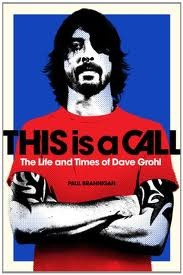
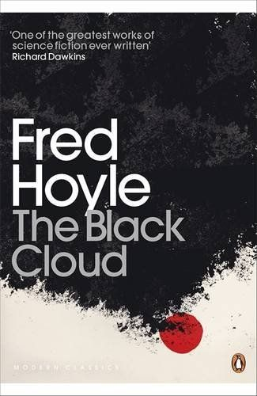
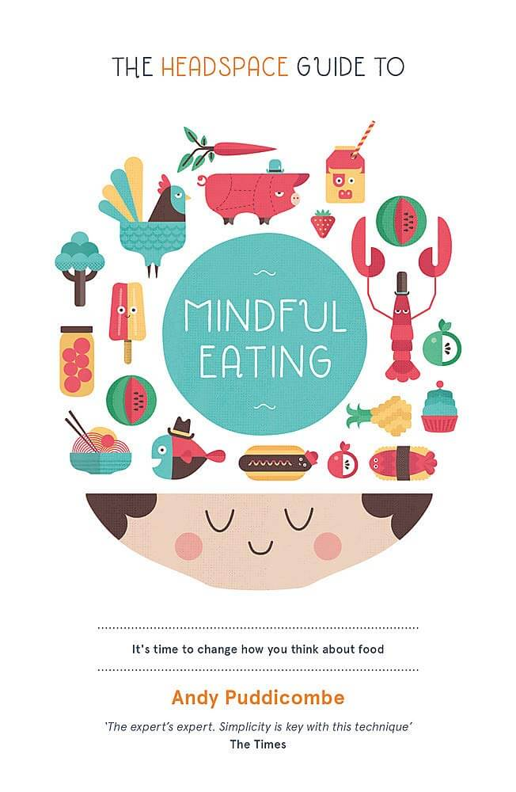

Off the Bookshelf #1
What am I reading?
If you’re thinking about buying some books, try reaching out to your local independent bookstores before ordering from large retailers.
This Is a Call: The Life and Times of Dave Grohl
Paul Brannigan

As a fan of Dave Grohl, the Foo Fighters and his many other musical creations, I had been wanting to sit down and read Brannigan’s book. Paul Brannigan was an editor for Kerrang! magazine between 2005 and 2009. From Grohl’s early days going to gigs and the rise of punk rock to his journey as the Foo Fighters and other bands along the way, this was an entertaining and informative look into his life.
It was thanks to this book that I discovered Probot; a heavy metal side project with Grohl playing the instruments alongside singers from his favourite metal bands (including Lemmy, Max Cavalera and Jack Black). A self-titled album was released in 2003.
Berserk: Volume 1
Kentaro Miura
The Berserk 1997 anime was my first step into the world of anime, and now I’ve taken my first step into the world of manga. Berserk is a dark fantasy adventure following Guts, the Black Swordsman, who fights to pursue his own ambitions and protect his friends. Berserk was serialised in 1989, and is currently on its 40th volume. I’ve already ordered volumes 2-5 and cannot wait to dive back into Berserk’s world.
The Collected Schizophrenias: Essays
Esmé Weijun Wang
This book collects a number of essays, written by Wang, about her experiences and struggles dealing with mental health disorders (schizoaffective disorder bipolar type, schizotypal disorder and late-stage Lyme disease). The reason that “schizophrenias” is plural is because Eugen Bleuler, a Swiss psychiatrist, treated them as a spectrum of disorders. The Collected Schizophrenias was the winner of the 2016 Graywolf Press Nonfiction Prize. Check out Wang’s website.
The Sandman Vol. 8: World’s End (30th Anniversary Edition)
Neil Gaiman
The Sandman is a DC Vertigo graphic novel series written by Neil Gaiman and illustrated by a handful of creative and talented people. The Endless (Destiny, Death, Dream, Destruction, Desire, Despair and Delirium) have existed since the dawn of time. The tales told in The Sandman follow Death, the protagonist, but all the Endless, and a plethora of characters live and breath in the wonderful world Gaiman has created.
“These are great stories, and we’re all lucky to have them. To read Now, and maybe again Then, later on, when we need what only a good story has the power to do: to take us away to worlds that never existed, in the company of people we wish we were…or thank God we aren’t.” - Stephen King.
The Black Cloud
Fred Hoyle

Sir Fred Hoyle was a British astronomer who worked at the Institute of Astronomy at Cambridge. The Black Cloud is a science fiction novel that details the observation of a huge gas cloud that may or may not block the Sun’s radiation from reaching Earth.
In the preface, Hoyle tells the reader, “I hope that my scientific colleagues will enjoy this frolic. After all, there is very little here that could not conceivably happen.” Hoyle makes the reader feel as if they are among the scientists and astronomers tackling the situation.
Currently reading…
Contact
Carl Sagan
Wanting more science fiction after completing Fred Hoyle’s ‘The Black Cloud’, I picked up my first Carl Sagan book. Contact explores communication between humans and extraterrestrial life forms.
The Headspace Guide to Mindful Eating
Andy Puddicombe

Andy is a former Buddhist monk and the co-founder of Headspace, teaching meditation and mindfulness. I’ve recently started to pay more attention to the food and drinks I consume, trying to learn how to keep up healthy eating habits. This book offers an effective approach to maintaining awareness of what you eat and drink, observing the state and feelings of your mind and body.
What are you reading during quarantine?